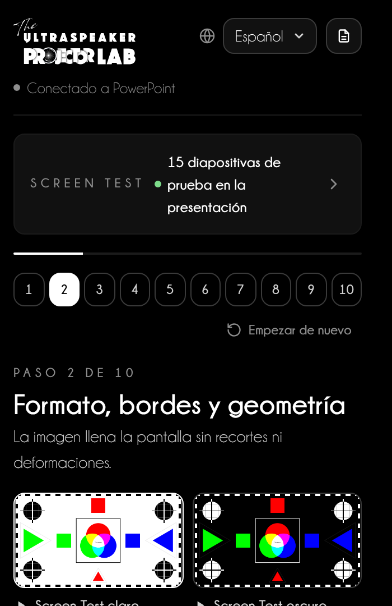
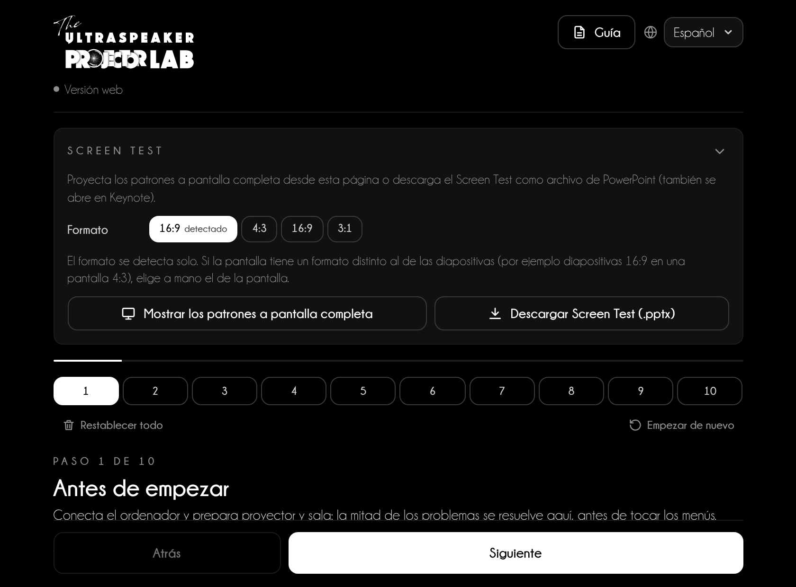
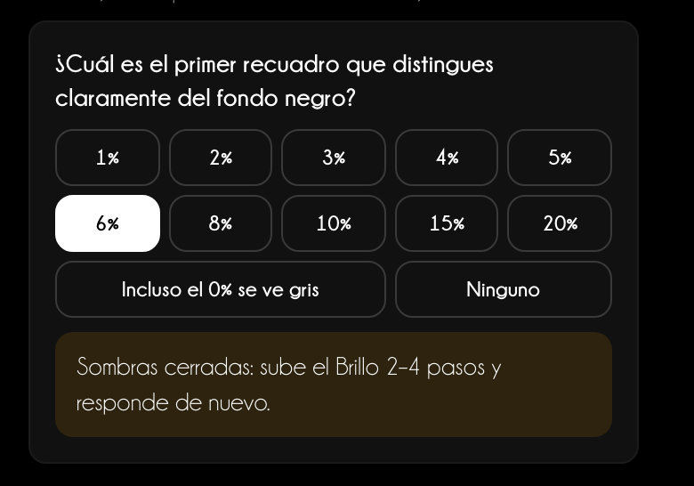
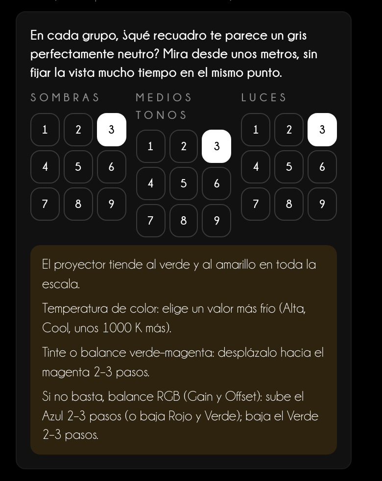
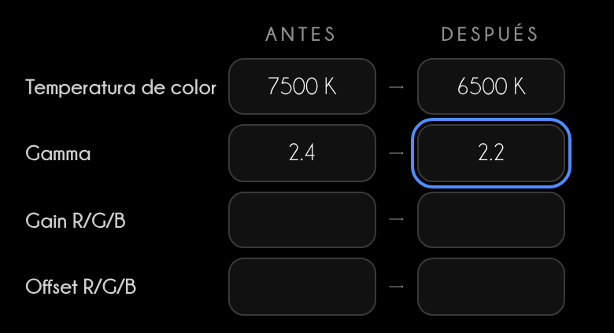
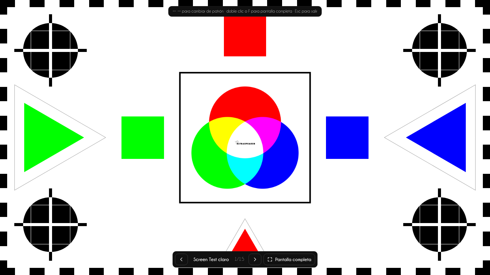
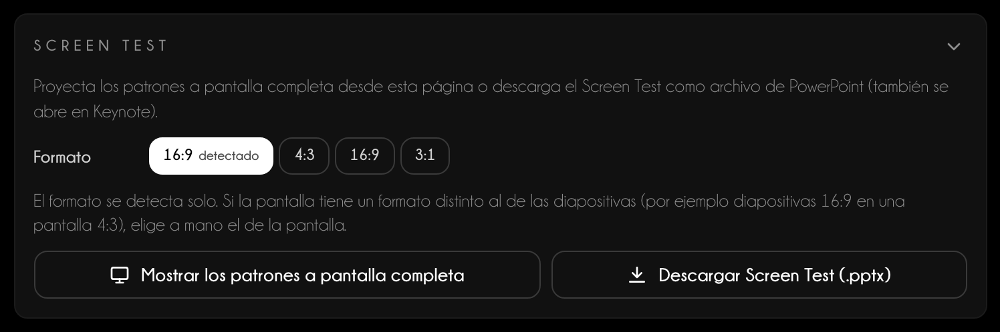
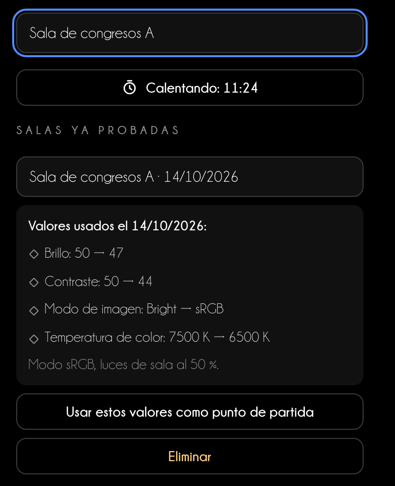
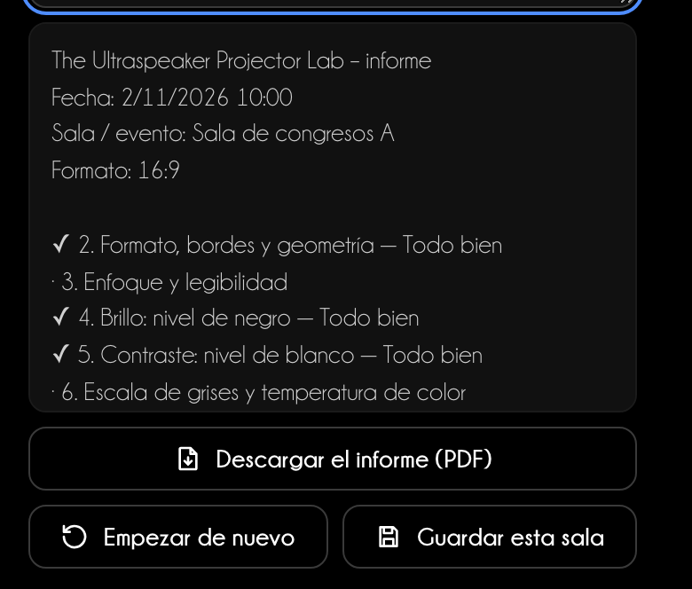

Guía de uso
El proyector a punto
antes de hablar
Projector Lab te guía en 10 pasos para ajustar formato, enfoque, negro, blanco y color del proyector, con patrones de prueba hechos para tu presentación.
Guía de uso
Projector Lab te guía en 10 pasos para ajustar formato, enfoque, negro, blanco y color del proyector, con patrones de prueba hechos para tu presentación.
Índice
Cada sala tiene un proyector distinto. Projector Lab te hace proyectar un patrón de prueba, te dice qué mirar y qué menú del proyector ajustar. En 10–15 minutos tus diapositivas y tus fotos clínicas se ven como en tu monitor.
En PowerPoint
Pestaña Inicio → grupo The Ultraspeaker → Projector Lab. El panel se abre a la derecha. Insertar diapositivas de prueba añade a la presentación 15 diapositivas de prueba en su formato, con las instrucciones en las notas del orador.
En el navegador
niki977.github.io/ultraspeaker-projector-lab, sin instalar nada. Muestras los patrones a pantalla completa en el proyector o descargas el Screen Test en .pptx para PowerPoint y Keynote. En el teléfono, el procedimiento queda a mano.
Qué queda en el dispositivo
Idioma, procedimiento en curso, temporizador y salas guardadas quedan en la memoria del navegador o de PowerPoint. No se envía ningún dato a ningún servidor.

| Función | PowerPoint | Versión web |
|---|---|---|
| Diapositivas de prueba en la presentación | Sí | — |
| Patrones a pantalla completa | En una ventana | Sí |
| Screen Test .pptx para descargar | — | Sí |
| Foto clínica | En la diapositiva de prueba | En el patrón a pantalla completa |
| «Restablecer todo» | — | Sí |
La misma página en la versión web y en el panel: arriba el Screen Test, debajo los 10 pasos.

1 2 3 4 5 6 7Cada paso tiene la misma estructura. Proyectas el patrón, miras desde el fondo de la sala, respondes a la pregunta y el Lab te dice qué menú ajustar, en qué dirección y cuánto.
La pregunta «¿Qué ves?»
En los pasos 4–8 tocas lo que ves: por ejemplo el primer recuadro que se distingue del negro. La respuesta indica la corrección y el resultado del paso se actualiza solo.
Dominante de color
En el paso 6 eliges, en cada grupo, el gris que te parece más neutro. Si no es el 5 del centro, el Lab reconoce la dominante e indica temperatura de color, tinte o ganancia RGB.


Valores usados
Anota los ajustes del proyector antes y después: van al informe y a las salas guardadas.

Conecta el ordenador y prepara proyector y sala: la mitad de los problemas se resuelve aquí, antes de tocar los menús.
La imagen llena la pantalla sin recortes ni deformaciones.
Estrellas nítidas en el centro y en las esquinas, y el tamaño mínimo de texto legible desde el fondo de la sala.
Detalle en las sombras sin un negro grisáceo.
Blancos plenos que no se queman: los detalles claros siguen visibles.
Grises neutros y pasos regulares: es la base para que también los colores sean correctos.
Colores plenos pero fieles, sin tonos desplazados ni zonas empastadas.
Tus fotos clínicas deben mostrar esmalte, márgenes y tejidos como los ves en el monitor.
Para ver una foto clínica tuya, usa «Prueba con una foto clínica tuya» («Insertar una foto clínica tuya» en PowerPoint) o arrastra la foto, JPG o PNG, al recuadro discontinuo. En la versión web aparece una vista previa: pulsa «Proyectar la foto» para verla en el patrón «Tu foto».
Ninguna mancha, zona de color o punto fijo en la imagen.
Comprueba una diapositiva real, anota los ajustes y quita las diapositivas de prueba.
15 patrones, en el mismo orden que los pasos. Se adaptan al formato real de la pantalla: los bordes del patrón coinciden con los del proyector.

En la versión web elige el formato de la pantalla y pulsa Descargar Screen Test (.pptx). El archivo contiene las 15 diapositivas con notas; Keynote lo abre con Archivo → Abrir.

1 2 3| Paso | Patrones |
|---|---|
| 2 · Formato, bordes y geometría | Screen Test claro, Screen Test oscuro, Cuadrícula |
| 3 · Enfoque y legibilidad | Enfoque |
| 4 · Brillo: nivel de negro | Negro |
| 5 · Contraste: nivel de blanco | Blanco |
| 6 · Escala de grises y temperatura de color | Grises, Grises comparados |
| 7 · Color y saturación | Barras SMPTE, Rampas de color |
| 8 · Referencias clínicas | Clínico, Tu foto |
| 9 · Uniformidad y limpieza | Blanco pleno, Gris pleno, Negro pleno |
Tres herramientas para no empezar de cero en cada sala.
En el paso 1 pulsa Iniciar calentamiento (15 min). Con lámpara hacen falta al menos 15 minutos, mejor 30; láser y LED se estabilizan en 5–10.

En el paso 10 el informe resume fecha, formato, resultados, respuestas y valores. Añade una nota y pulsa Descargar el informe (PDF): obtienes un PDF para la cabina técnica (en el panel se abre en el navegador).
Empezar de nuevo borra resultados, respuestas y valores pero conserva las salas guardadas. En la versión web Restablecer todo borra también las salas y el formato.

El mejor ajuste no sustituye a la preparación.
Consejo de speaker
Llega a la sala 30 minutos antes. Enciende el proyector enseguida, haz el procedimiento mientras se calienta y termina con tu diapositiva más exigente: una foto clínica, el texto más pequeño, un gráfico.
Si la cabina técnica no te deja tocar el proyector
Pide tres cosas concretas: modo sRGB o Presentación, overscan desactivado, keystone al mínimo. El resto lo haces desde el ordenador: resolución nativa, formato de color RGB Full, Night Shift y Luz nocturna desactivados.
| Pantalla | Qué ocurre | Qué hacer |
|---|---|---|
| 4:3 con diapositivas 16:9 | Bandas negras arriba y abajo | Acepta las bandas; elige 4:3 en el Screen Test para comprobar los bordes de la pantalla |
| 16:9 con diapositivas 4:3 | Bandas negras a los lados | No estires la imagen: los círculos se volverían ovalados |
| 3:1 (pantallas panorámicas) | Diapositivas pequeñas en el centro o recortadas | Pregunta el formato antes; prueba con el Screen Test 3:1 y el texto más grande |
Asistencia
Escribe a info@theultraspeaker.com indicando el ordenador y la versión de PowerPoint.

Knowledge is not enough.
From expert to Ultraspeaker.
theultraspeaker.com · info@theultraspeaker.com